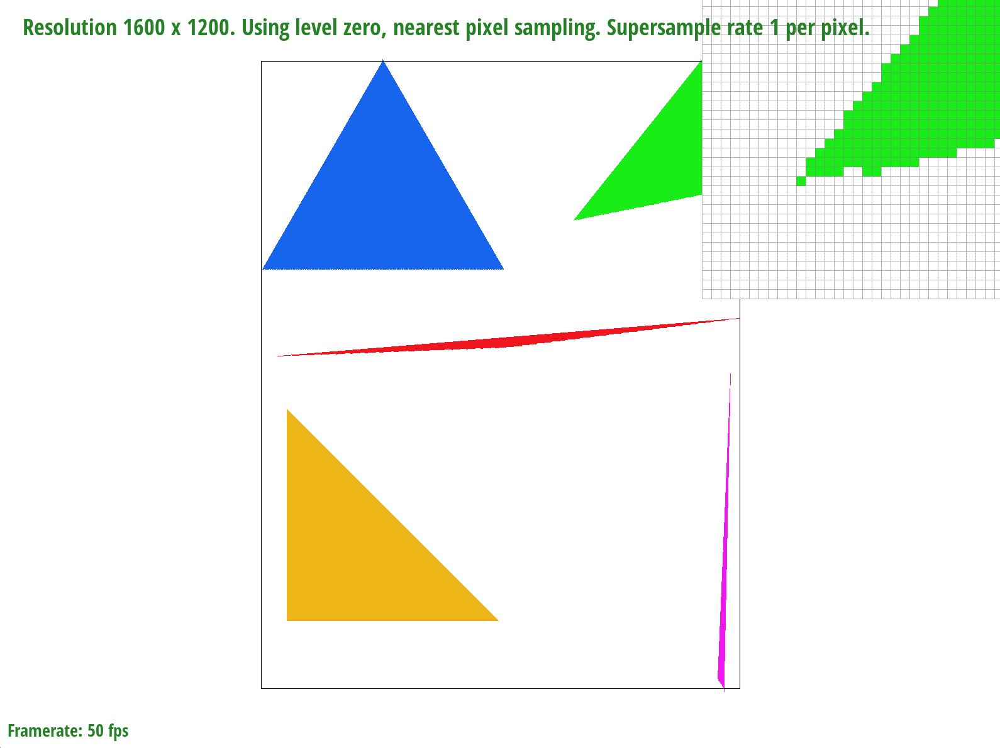
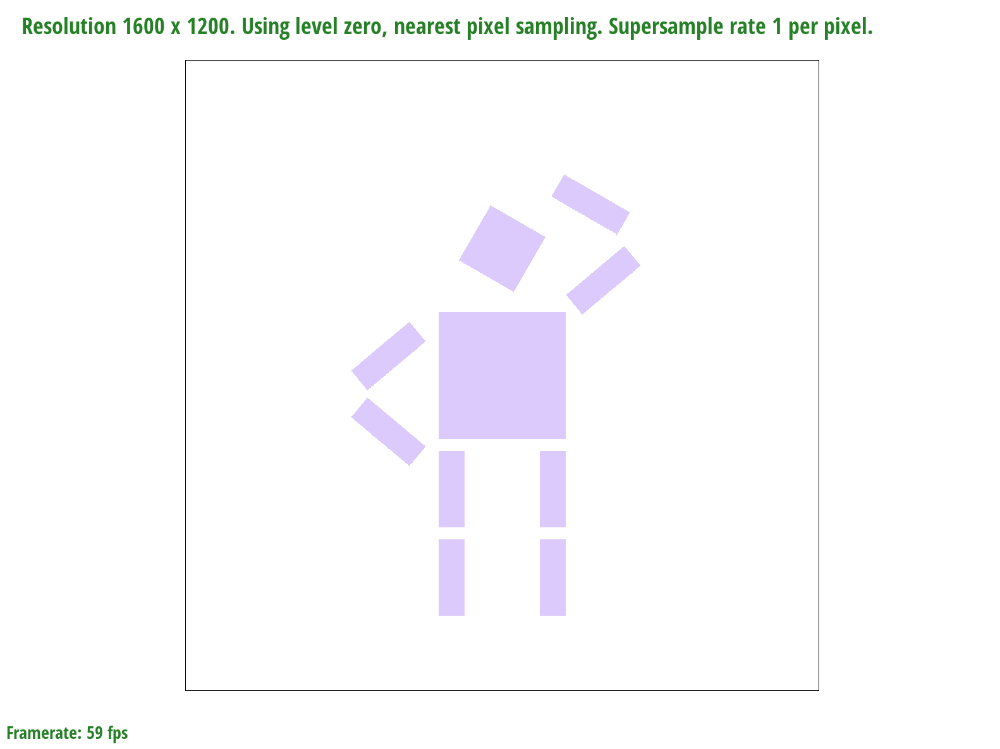

To rasterize triangles, we want to sample every point inside the triangle. To do this, we want to be sure that every point is within the bounds of the three lines which comprise the triangle, and then apply the sampling function to these points which fulfil this requirement. This often involves iterating through points in the frame buffer and testing whether they are within these bounds.
For our rasterization algorithm, we identify and organise the three points of the triangle into leftmost, middle, and rightmost points. We then identify the slopes of the three lines of the triangle.
We sample in two halves -- one loop which samples all points within the triangle from the leftmost to the middle point, and then repeating the same process in a loop from the middle point to the rightmost point. We find an upper bound slope and lower bound slope by comparing the leftmost-to-middle slope and the leftmost-to-rightmost slope. From the left point, we loop through points within the triangle, sampling from the leftmost point to the middle point in vertical lines. We find the starting and ending points of the next vertical line by increasing y's lower bound and upper bound by the respective slopes of the triangle. Once we reach the middle point, we re-identify the upper and lower bound slopes and repeat this sampling process for the remaining section of the triangle.
Since this algorithm only samples points within the triangle, it is better than one which checks each sample within the bounding box of the triangle. Unfortunately we didn't have time to compare this with simple bounding box triangle rasterization, since this was the initial approach we directly implemented and so couldn't turn "off" our optimization.
wip
We transformed cubeman so that he's looking off into the distance (he would be squinting if he had eyes). His head is tilted back slightly (rotated), and his left arm is angled (the two parts rotated and translated) to place his "hand" on his "hip". His right arm is angled upwards (rotated and translated), shielding his eyes (again, if he had eyes).
